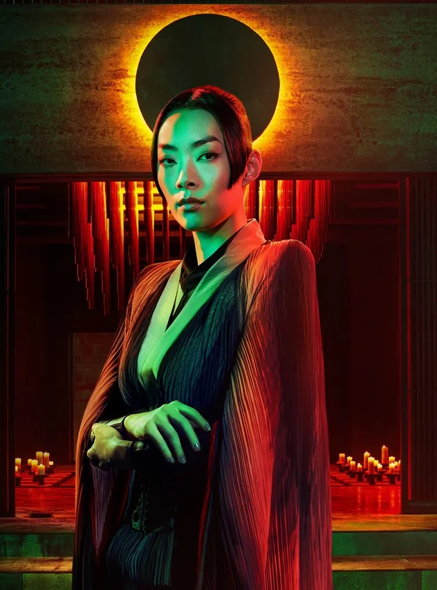
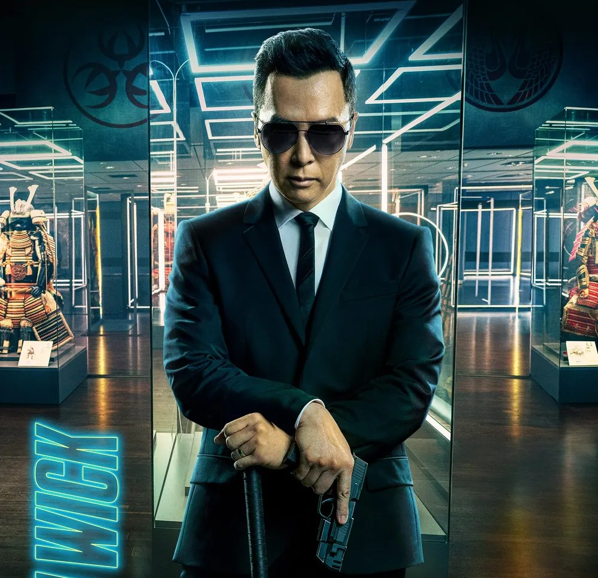
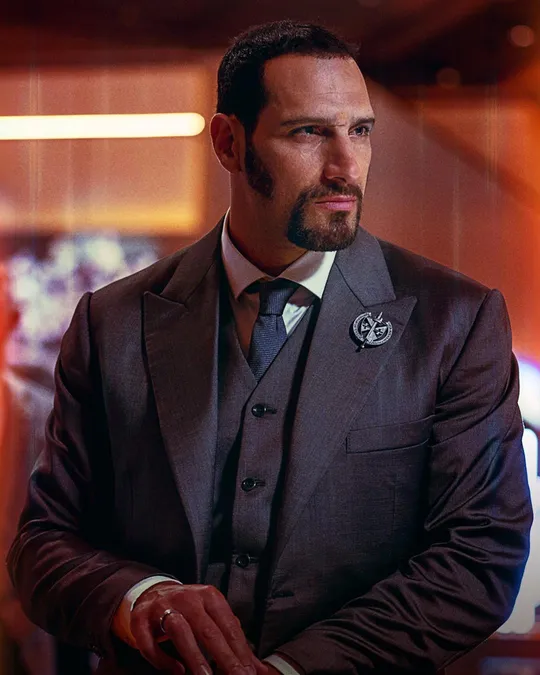
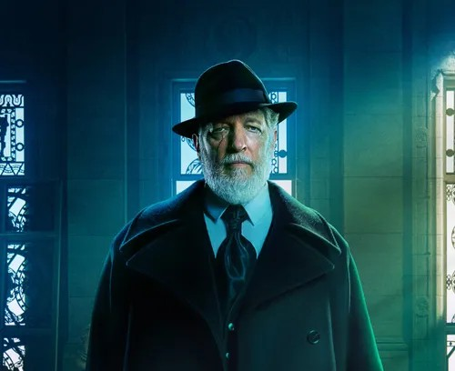
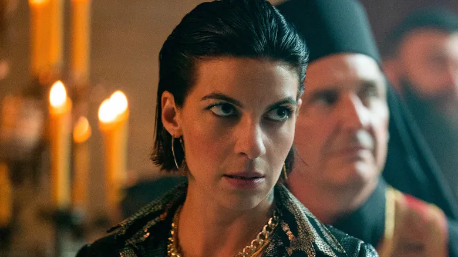
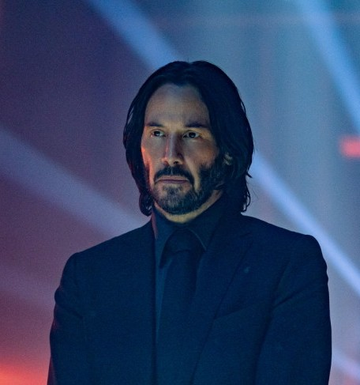

영화 개요
전설적인 킬러, 존 윅이 사랑하는 개와 차를 잃고 복수를 시작한다.
- 감독: 채드 스타헬스키
- 장르: 액션
- 개봉: 2023년
영화 소개
죽을 위기에서 살아난 ‘존 윅’은 ‘최고 회의’를 쓰러트릴 방법을 찾아낸다. 비로소 완전한 자유의 희망을 보지만, NEW 빌런 ‘그라몽 후작’과 전 세계의 최강 연합은 ‘존 윅’의 오랜 친구까지 적으로 만들어 버리고, 새로운 위기에 놓인 ‘존 윅’은 최후의 반격을 준비하는데,, 레전드 액션 블록버스터 <존 윅>의 새로운 챕터가 열린다!

시마즈 아키라
우치다 마아야

케인
견자단

치디
마르코 자로

전령
클랜시 브라운

카티야
나탈리아 테나

노바디
샤미어 앤더슨

존윅
키아누 리브스
흥행
개봉 11일차에 100만 관객을 돌파하며 전작의 흥행을 넘어서 시리즈 최고 흥행작이 되는 것이 확정되었다. 100만 관객 돌파와 동시에 파리 개선문 배경의 스페셜 포스터가 공개되었다. 또한 〈킹스맨: 퍼스트 에이전트〉의 관객수를 뛰어넘고 코로나 이후 개봉한 청불 영화 중 1위를 기록했다.